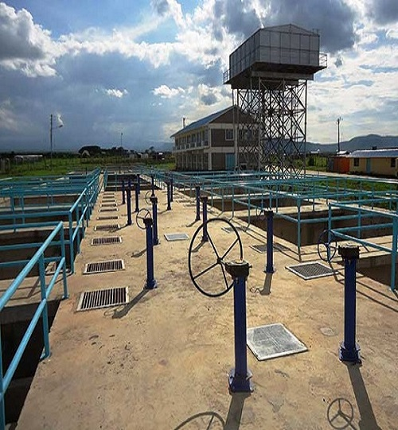

About Us
Isiolo Water & Sewerage Company-IWASCO
IWASCO was established as a limited liability company under the water sector reforms enshrined in the Water Act of 2002. Its main mandate is to provide high quality water and sewerage services to the people of Isiolo County and its environs. The Company has a functional Organizational Structure, headed by the Managing Director who leads a Management Team of Chief Managers.
- The Company is mandated to provide clean water and sewerage services to the residents of Isiolo County
- The Isiolo Water and Sewerage Company is committed to ensuring that all stakeholders receive water regularly and efficiently and that the water reaching the customers is of highest quality.
Meet Our Team
Our Engineers & Workers

Abdullahi Sora
Managing Director

Nura Bonaya
Commercial Manager

Joseph W. Muriuki
Lead Engineer
Mariam Dida
Human Resource